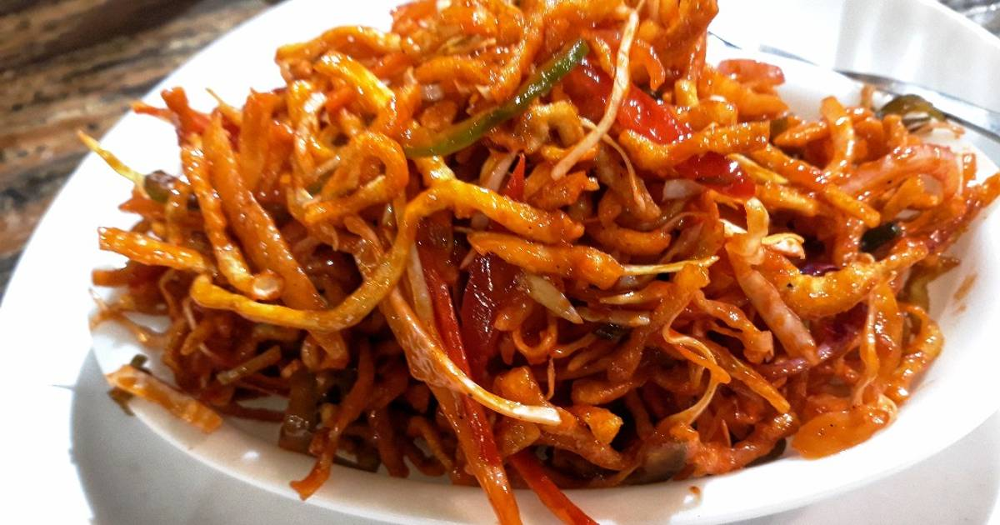

Chinese Bhel Recipe

Description
Chinese bhel is a fast food and street food item in India and is considered a part of Indo-Chinese cuisine. It is
a variant of chop suey and bhelpuri. It is popular in Mumbai.
Ingredients
- Fried Noodles: 3 cups
- Oil: 3 tbsp
- Garlic: 1 clove, finely chopped
- Spring Onions: ¼ cup, chopped
- Capsicum: ½ cup, sliced
- Carrot: ½ cup, shredded
- Cabbage: 1 cup, shredded
- Schezwan Sauce: 2-4 tbsp (to taste)
- Tomato Ketchup: 2 tbsp
- Salt: to taste
Steps
- Heat oil in a pan, add garlic and sauté briefly.
Add spring onions, capsicum, carrot, and cabbage. Sauté for about 1 minute until slightly cooked but still
crunchy.
- Add Schezwan sauce, tomato ketchup, and salt. Mix well and cook for a few seconds.
- In a large bowl, combine the sautéed vegetables with fried noodles. Toss to mix evenly.
- Garnish with additional spring onions if desired and serve immediately to maintain crunchiness.
Home